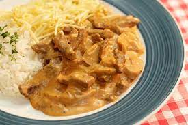

Strogonoff de Frango

O strogonoff de frango é um prato amado por todos e muito fácil de ser preparado!
Que tal aprender como fazer essa delícia aí na sua casa?
Essa receita de strogonoff de frango é tão simples que vai te surpreender!
Ingredientes (10 porções)
- 3 peitos de frango cortados em cubos
- sal a gosto
- 1 cebola picada
- 1 colher de manteiga
- 1/3 copo de mostarda
- 1 copo de creme de leite
- 1 dente de alho picado
- pimenta-do-reino a gosto
- 2 colheres (sopa) de maionese
- 1/2 copo de ketchup
- 1 copo de cogumelos
- batata palha a gosto
Modo de preparo (Tempo: 1h)
- Em uma panela, misture o frango, o alho, a maionese,o sal e a pimenta.
- Em uma frigideira grande, derreta a manteiga e doure a cebola
- unte o frango temperado até que seteja dourado
- Adicione os cogumelos, o ketchup e a mostarda
- Incorpore o creme de leite e retire do fogo antes de ferver
- Sirva com arroz branco e batata palha